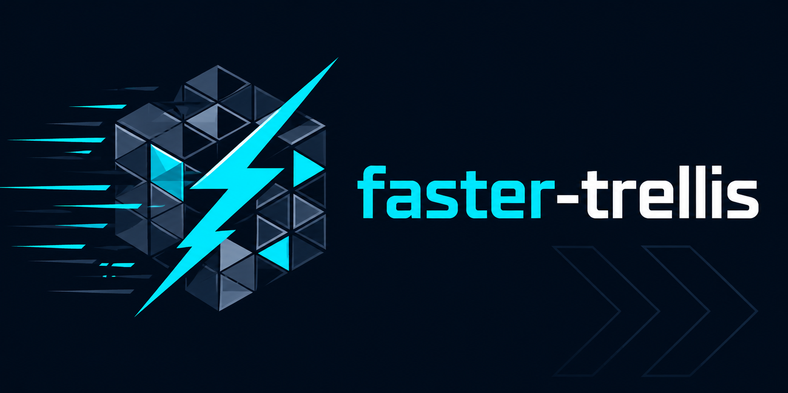
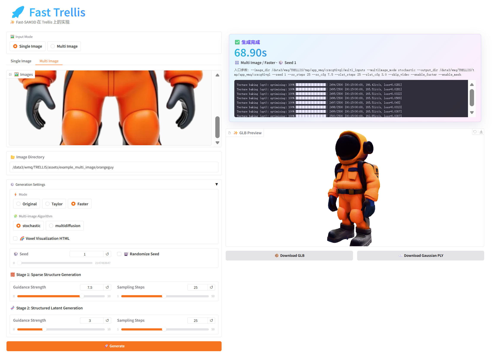
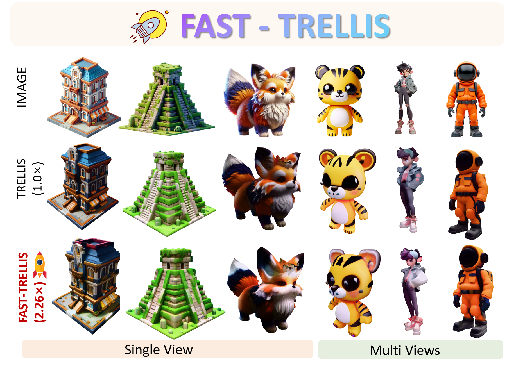
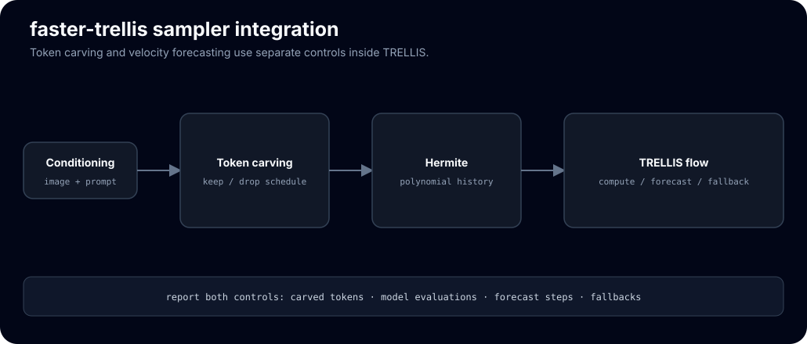

Faster TRELLIS image-to-3D with Hermite velocity forecasting
faster-trellis is microsoft/TRELLIS image-to-3D with a training-free acceleration stack built into the flow-matching sampler. It forecasts and reuses the final CFG-combined velocity, so the sampler runs fewer, cheaper network evaluations per asset; the weights, decoders, and mesh + Gaussian + radiance-field outputs are the base model’s, untouched.
git clone --recurse-submodules https://github.com/Archerkattri/faster-trellis cd faster-trellis # TRELLIS deps (CUDA toolchain required); see setup.sh for the full option list. . ./setup.sh --new-env --basic --xformers --flash-attn --spconv --nvdiffrast # Deployment-contract runtime (budget/telemetry/manifest): pip install "hicache-pp @ git+https://github.com/Archerkattri/hicache-plus-plus@master"
01
Evidence
| End-to-end speedup vs base TRELLIS | 2.85× — 1.22 s vs 3.49 s per asset, Toys4K, RTX 5090, 25 steps/stage |
|---|---|
| Speedup vs Fast-TRELLIS | 1.35× — 1.22 s vs 1.65 s at equal-or-better quality |
| F1@0.05 mean | 0.825 vs 0.823 (Fast-TRELLIS); base 0.841 |
| Chamfer distance | 0.0581 vs 0.0594 (Fast-TRELLIS); base 0.0556 |
| SLaT network evals (median) | 6 vs 14 (Fast-TRELLIS); base ~25 |
| Benchmark scope | 32 objects all variants align; mesh-decoder output, Go-ICP similarity alignment, identical harness every row |
02
Media



03
Install & verify
# CPU-only accelerator tests (no GPU, no TRELLIS weights) — from CI: python tests/test_hicache.py python tests/test_adaptive_cfg.py python tests/test_hicache_contract.py # 4 deployment-contract tests
04
Limits
What this release does not claim (from the release notes):
- The results card is retained as prior-run evidence from the stated benchmark setup. It is not a current acceptance result and does not establish a universal speedup, losslessness, or quality ordering.
- Re-run the manifest command in
example_faster.pyon the target GPU before making a new claim. - The published numbers above were measured with the as-released code and remain valid as-measured; re-validation on this model is pending.
05
Family
| Base model | TRELLIS v1, accelerated by the hicache-plus-plus forecast core |
|---|---|
| Same base | faster-trellis-plus-plus |
| All 13 adapters | TRELLIS: faster-trellis, faster-trellis-plus-plus · TRELLIS.2: fast-trellis2, hermit-trellis2, hermit-trellis2-plus-plus · Hunyuan3D-2: hunyuan2-plus, hunyuan2-plus-plus · Hunyuan3D-2.1: hunyuan2.1-plus, hunyuan2.1-plus-plus · SAM: sam3d-plus, sam3d-plus-plus, fastsam3d-plus, fastsam3d-plus-plus |